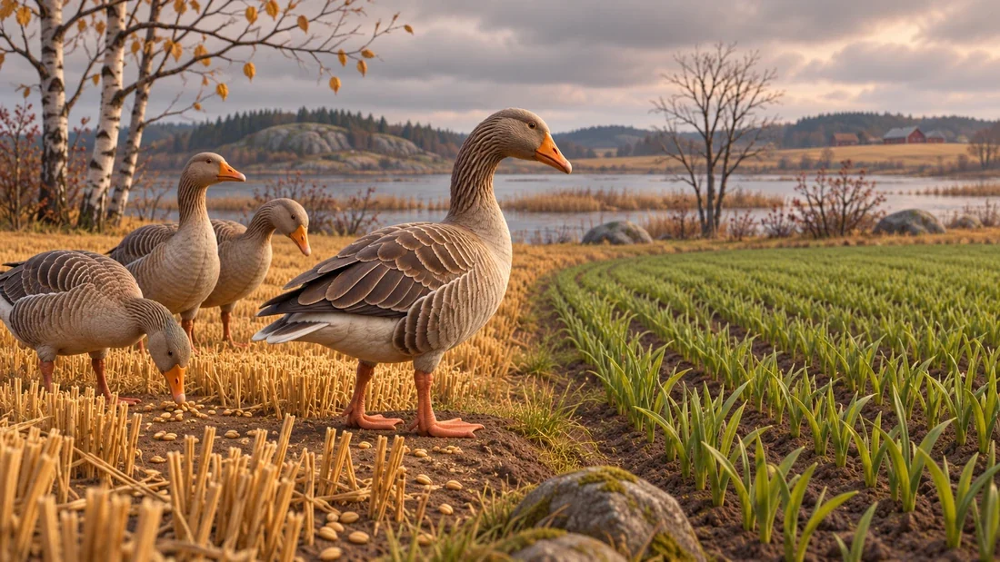

Halvtimmen · Fåglar och naturvård
När grågässen lyfter är problemet inte löst

Fördjupning. Bygger på svenska fältstudier från 2022 och 2024, inte på en ny händelse i dag.
När grågässen lyfter från en åker kan den se fredad ut. Men i ett svenskt fältförsök var det främst en paus. Forskarna följde GPS-märkta grågäss i södra Mellansverige. De första fyra timmarna efter att fåglarna skrämts använde de våtmarker mer och åkrar mindre. Efter ett dygn gick det inte längre att påvisa någon skillnad i användningen av jordbruksmark mellan skrämda och ostörda gäss. Månsson med flera, 15 oktober 2024.
Från en enskild åker är det lätt att se att flocken försvinner. På landskapsnivå är frågan vart den tar vägen. Forskarna följde fåglarnas positioner, inte hur stor skörd lantbrukarna fick. Det de såg motiverar därför en närmare titt på vilka åkrar som erbjuder ett alternativ, inte slutsatsen att någon viss metod sparar en viss mängd gröda.
Runt Sörfjärden i Södermanland räknade en annan studie grågäss på flera slags åkrar. Ett fält där gässen fick beta ostört, en så kallad avledningsåker, användes mer än andra fält på våren och sommaren, men inte på hösten. Överlag var chansen att se betande grågäss högre på fält närmare deras övernattningsplats. En gräsåker som fungerar på våren är alltså inte självklart bästa alternativet på hösten. Då är stubb med spillsäd en möjlighet, men den behöver prövas på plats. Teräväinen med flera, 20 september 2022, fulltext via Norges nationella forskningsarkiv · Studiepost hos Högskolan Kristianstad.
Källor och källvärdering
Månsson med flera jämför registrerade GPS-positioner efter en lokal störning med samma märkta fåglars positioner vid ett tidigare, ostört jämförelsetillfälle. Det ger god grund för ett tidsbegränsat beteenderesultat, inte ett mått på skördeskada. Teräväinen med flera räknar fåglar kring en enskild sjö och modellerar sambandet med plats, tid och gröda. Det säger något om just det landskapet, men prövar inte generella avledningsåkrar eller minskad skördeskada. Studierna kompletterar varandra men överlappar i forskargrupp och är inte oberoende upprepningar av samma försök.